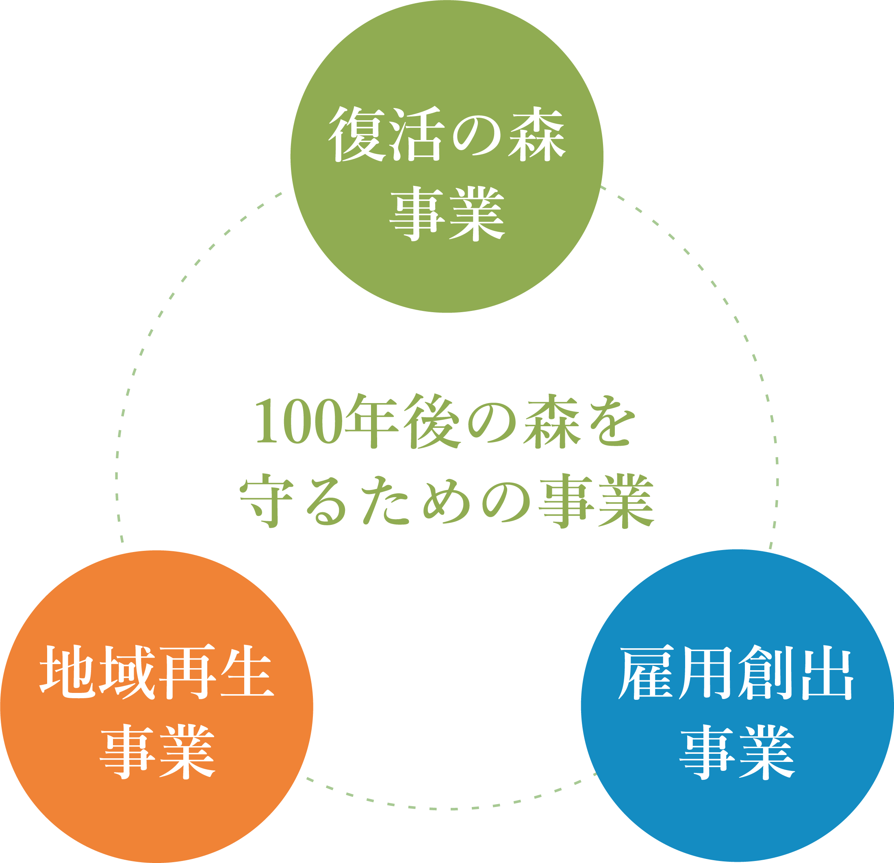

私たちの事業について
私たちは、目的を達成するために次の3つの事業に取り組んでいます。
吉里吉里の里山は、その約８割が漁業者の所有林となっており、長いこと手つかずの荒廃した森となっています。森林保全整備作業（主に間伐等）を施し、山や海、その流域をも含めた自然環境の回復を目指し、森を元気に復活できる環境づくりを行います。
（２） 地域再生事業再生可能エネルギー（木質バイオマス燃料）の地域内における普及促進活動を推進することで、持続可能な暮らしの再現をめざします。また、森林保全整備を行ったエリアや生み出された木材を活用し、内外交流の促進に取り組みます。
（３） 雇用創出事業森林作業から生み出される木質・木材を有効活用（主に薪の生産）することで販路を拓き、自伐林業の副業的生業づくりに繋げます。また、林業学校を開催し、失われつつある“暮らしの伝統技術”の普及と、林業担い手育成にも取り組みます。

これらの活動を地域住民と一体となって取り組むことで、やがて豊かな海の再生へとつなげ、次世代へと引き継いでいくことで、地域社会に寄与することを目的に、具体的に以下4つの活動をしています。
- 森林保全整備活動
- 薪の生産・販売・PR活動
- 人材の育成活動
- 内外交流促進活動